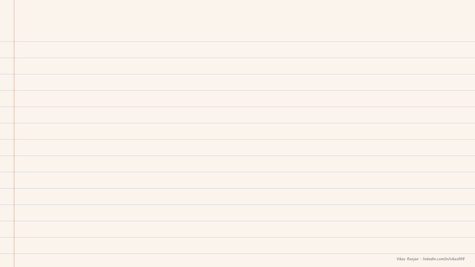
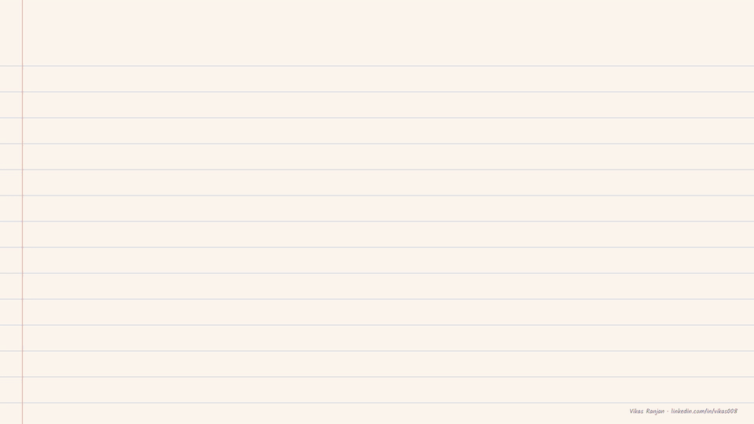
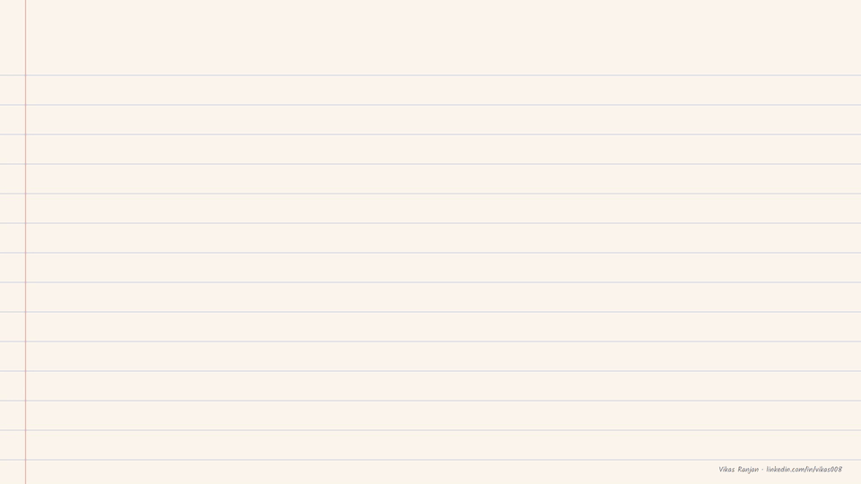
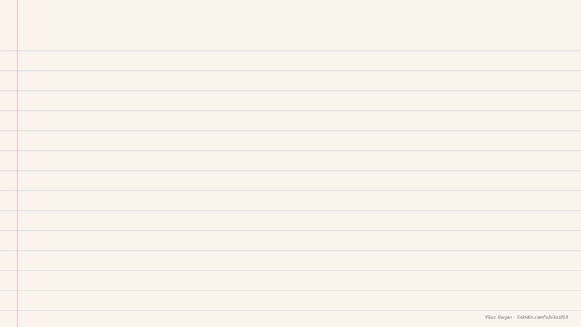

Chapters 1 to 5: domain language and GLOSSARY.md, grill with docs, ADRs, pruning, the async doc loop. Typed notes · Handwritten PDF
A step-by-step way of working on a repository, new or old, that a coding agent can follow and deliver on predictably. It starts with the words we use.
A human and a coding agent look at the same product. To work on it together, they need a common language that both can understand.
We write that language down in one file, GLOSSARY.md. The idea comes from domain-driven design (DDD), where a company keeps a single language for talking about its domain, called the ubiquitous language, inside a bounded context.
Two rules for picking entries. Use the words your users use, so the language is easy to work with. And go slowly: add only the entries you need, and grow the file as you need more.

rememberOne glossary, so the human and the agent mean the same thing.
Is it a refund, a return or a cancel? Before an agent builds anything, we settle questions like this one. First we need the same glossary.
Then we ask the AI to grill us. With a skill called /grill-with-docs, it asks question after question until both of us are on the same page. Each answer updates the glossary. Along the way we decide which decisions are worth recording, business or technical.
Once the glossary is in place, the skill asks the right questions. For now this is a manual exercise, and the plan is to try it in each repository.

rememberAgree on the words before the agent builds.
Some decisions need a written record. An Architecture Decision Record (ADR) is a short file that explains one decision. The repo keeps them next to the glossary:
GLOSSARY.md terms that are hard to understand
docs/
adr/
0001-... one hard decision per file
0002-...
Following the DDD book, a decision is worth an ADR when it is hard to reverse, surprising, or the result of a trade-off. It can be a tech decision or a business decision.

rememberRecord a decision when it is hard to reverse, surprising, or a trade-off.
Over time the glossary gets bloated, so we prune it on a regular basis. The same /grill-with-docs skill helps us discuss and remove entries nobody uses. ADRs get the same treatment.
Could these doc updates run as a loop? Updating on every merge changes too much. A regular async job is the better fit.

rememberKeep only the words. The code keeps the details.
The glossary and grill with docs are the foundation. With the words settled, the work moves forward step by step:
each step gets its own notes and chapter…